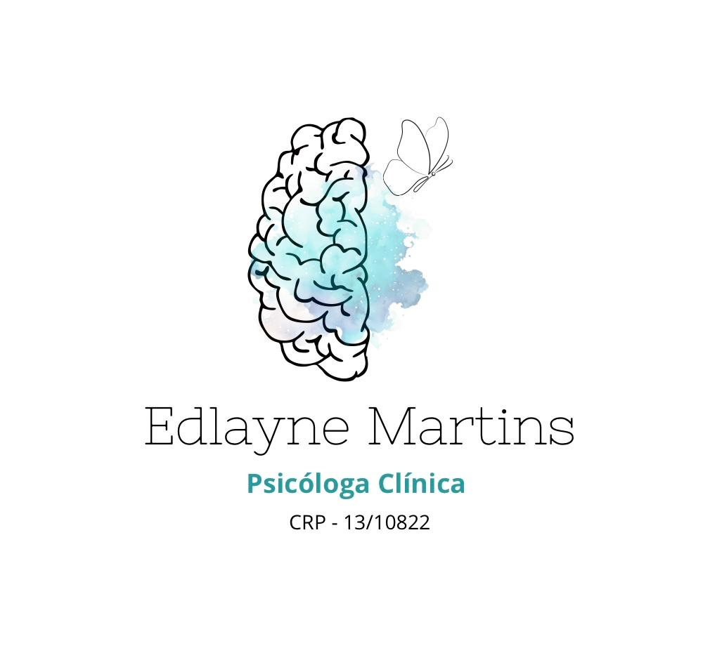

Terapia Cognitivo-Comportamental (TCC)
Atendimento Presencial e Online
Olá! Sou a Dra. Edlayne Martins (CRP 13/10822), psicóloga clínica especializada em Terapia Cognitivo-Comportamental (TCC).
Meu trabalho é pautado na escuta acolhedora, na ética e em intervenções baseadas em evidências científicas. Auxilio meus pacientes a compreenderem seus padrões de pensamento e comportamento, desenvolvendo estratégias práticas para lidar com a ansiedade, estresse e desafios emocionais.
Manejo da ansiedade, prevenção de crises, fobias e desenvolvimento de estratégias de regulação emocional.
Reestruturação de pensamentos automáticos, ativação comportamental e resgate da autoestima e vitalidade.
Treino de assertividade, superação da procrastinação, inteligência emocional e resolução de conflitos.